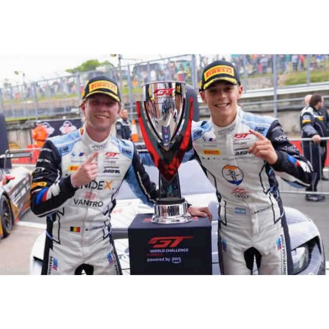

Nacho Montenegro ganó en Inglaterra y volvió a brillar en el GT World Challenge Europe

Ignacio “Nacho” Montenegro volvió a dejar bien arriba al automovilismo patagónico. El piloto de Rada Tilly logró una gran victoria en la Silver Cup del GT World Challenge Europe, en el histórico circuito de Brands Hatch, Inglaterra.
Montenegro compartió el BMW M4 GT3 N°30 del Team WRT junto al piloto belga Matisse Lismont, en un fin de semana donde la dupla fue protagonista desde el inicio.
Para entender la importancia del resultado, hay que tener en cuenta que el GT World Challenge Europe es una categoría internacional de autos GT, con equipos de primer nivel y un formato muy particular: los autos son compartidos por dos pilotos, que se van alternando durante la carrera. Por eso, además de velocidad, también son claves la estrategia, el trabajo en boxes y la coordinación entre ambos integrantes del binomio.
El fin de semana ya había comenzado de gran manera para Montenegro y Lismont, que fueron los más rápidos dentro de la Silver Cup en las tandas de clasificación y lograron la pole position de su clase para ambas competencias.
En la primera carrera, la dupla había conseguido ganar en pista dentro de su categoría, pero una penalización los retrasó en el clasificador y finalmente terminaron terceros en la Silver Cup.
La revancha llegó en la segunda final. Allí, Montenegro largó la carrera y luego le cedió el volante a Lismont, quien completó el trabajo para asegurar la victoria en la Silver Cup. Además, el binomio cerró una gran actuación en la clasificación general, peleando dentro de una grilla de altísimo nivel internacional.
El triunfo representa un paso enorme para Nacho en su primera temporada dentro de este campeonato mundial, donde ya había conseguido un podio en Paul Ricard y ahora suma una victoria en uno de los escenarios más exigentes del calendario europeo.
Para el automovilismo de la región, lo de Montenegro vuelve a ser motivo de orgullo. Desde Rada Tilly hacia el mundo, Nacho continúa afirmándose como uno de los grandes representantes argentinos en el plano internacional.